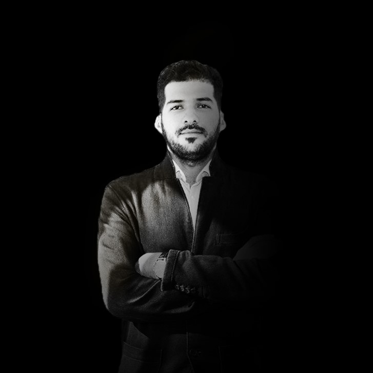

About Me
Abdulrhman Alshalal
My name is Abdulrhman Al-Shalal, I am 28 years old, I was born and raised in Bagdad, Iraq. In 2013, I graduated “Computer Science”, at the University of Bagdad. Since then, I have worked in my home country in many areas of expertise, including the Royal
Jordanian Airlines as a booking agent, I have programmed in c++ language for companies in Sulaimaniyah in northern Iraq, as well as developing and maintaining the IT system for a five-star hotel in Erbil.
In 2015 I left Iraq, traveling through east Europe until I reached Austria. Currently I live in a small village close to Leibnitz, where I learn and practice my hobby as a photographer and video creator. Since I came to Austria, my highest priority was
to improve my language skills, so I proudly got my B1 German Certificate and B2 English Certificate. For about two years I did some small volunteer jobs including, IT system maintenance in a Lagerhaus in Gleinstätten, or helping
my Austrian friends to create videos for their social media platforms.
In 2019 I volunteered at Anton Paar in Graz, where for 6 months I tried to sharpen my skills in web development and Adobe software suite. There I met a lot of experts in different areas of activity, who guided me through a very intense learning process.
In this time, I also had the possibility to practice my passion for video & photography, so I came up with new ideas to improve my social media platforms, mainly Instagram where I reached 27K followers.
Nowadays, no one doubts the place mobile devices have in any digital marketing strategy as they’re the star device through which users communicate, connect with others, and consume content. The same happens when it comes to video; according to study,
90% of users watch videos on their mobile devices. This exemplifies that videos and smartphones go hand-in-hand.
Video engages even the laziest buyers, it encourages social shares because "people share emotions not facts", so, by creating fun entertaining videos we increase shares and traffic to our website. Statistics say that Video Ads work wonders, boost the
email campaigns and they are the best way to connect with the audience.
After completing some online photography courses, I added more features to my professional portfolio, such as portraits, special events photography, corporate identity as well as creating photos and video content for different social media platforms.
My latest projects included videos for several advertising campaigns in the fitness and sport industry.
Generally, I like to keep fit and sport ranks very high in my daily schedule. The last 3 years I enrolled as a professional football player at Flavia Solva in Leibnitz and since last year I joined the Heimschuh Football Club. After the training I usually
spend time in one of the local cafes with my new football friends to talk or celebrate our victories.
In 2020, I successfully graduated a six months course at Red Cross Austria, becoming a certified medical assistant for crisis situations. In this volunteer work, I offer first help to patients with a critical health situation and bring them to the closest
hospital in order to get a more specialized treatment.
By volunteering, we feel rewarded in so many ways. It improves our self-worth and self-esteem, it can make us feel that we have a higher purpose in life. I recently discovered that making a difference in someone else’s life, it makes us feel better, happier,
more energized or it can even help us discover new interests or our biggest passion.
In conclusion, from a volunteer work does not only benefit the person or the organization we want to help, but also the volunteer. We may not receive money from it, but the experience itself is enough payment for the work, as it brings us a higher rate
of fulfillment, which makes us complete as a person.
Skills